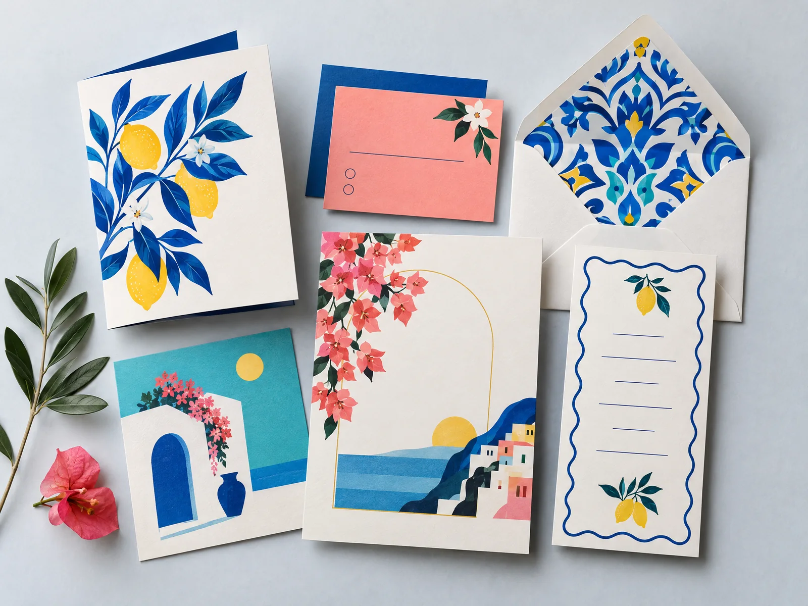
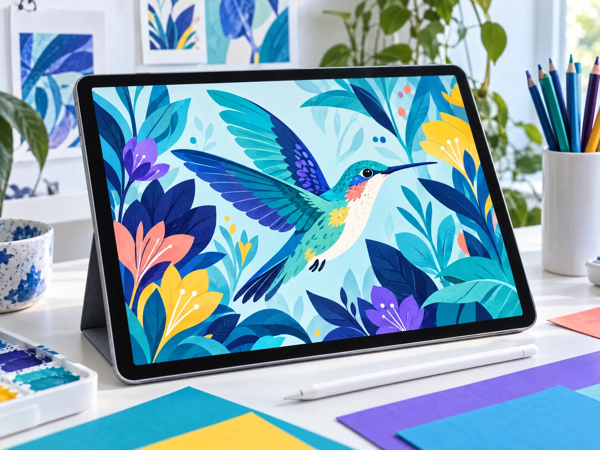
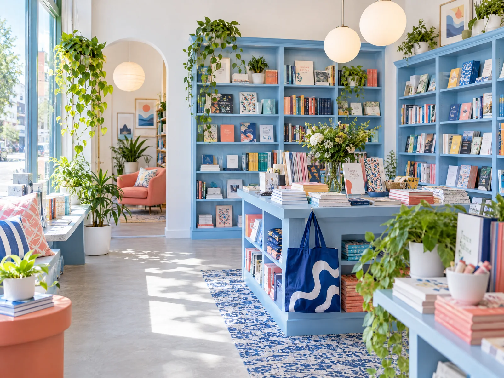

Sí. Podemos integrar identidad, piezas gráficas y diseño web en una ruta coherente para tu marca.
Portafolio
Proyectos que convierten ideas en presencia.
Explora ideas de identidad, experiencias digitales y piezas gráficas creadas para comunicar con intención.



Proyecto destacado · Audiovisual
Día de las Matemáticas
I.E. Eustaquio Palacios
Una pieza audiovisual creada para acompañar la celebración del Día de las Matemáticas y compartir la creatividad, la participación y el aprendizaje de la comunidad educativa.

Proyecto de identidad · Moda deportiva
Lady Sports
Creé una identidad visual para Lady Sports, buscando transmitir elegancia, estilo y modernidad a través de un logo limpio, atractivo y fácil de reconocer, acompañado del eslogan “Estilo en cada paso”.
Estilo en cada paso
¿Tienes dudas?
Hagamos fácil el primer paso.
Cuéntanos qué imaginas y te orientamos sobre el servicio, el proceso y los siguientes pasos.
Cuéntanos tu ideaPreguntas frecuentes
Respuestas claras para empezar.
Escríbenos con una breve descripción de tu idea. Revisaremos tus objetivos y te propondremos el mejor siguiente paso.
Claro. Adaptamos la solución a tu etapa y a las necesidades reales de tu proyecto.